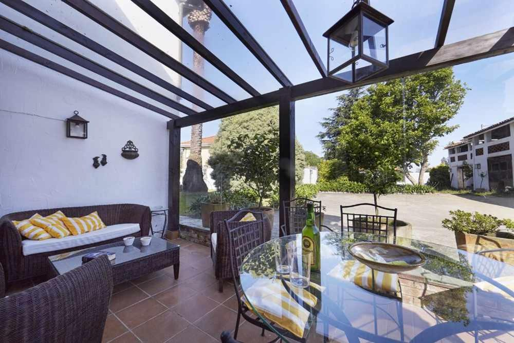

La Casa Costa Verde se encuentra en El Pito, a menos de 1 km de la playa de Aguilar, y ofrece alojamiento frente a la playa con bicicletas gratuitas, centro de fitness, bar y WiFi gratuita. El establecimiento cuenta con mesa de billar y ping pong.
La casa rural cuenta con 2 dormitorios, 1 baño, ropa de cama, toallas, TV de pantalla plana, zona de comedor, cocina totalmente equipada y terraza con vistas al jardín.
La recepción de la casa rural proporciona información sobre la zona.
La Casa La Palomba alberga un parque infantil. Después de un día de senderismo, pesca o ciclismo, los huéspedes pueden relajarse en el jardín o en la zona de salón compartida.
El aeropuerto más cercano es el de Asturias, ubicado a 14 km.
